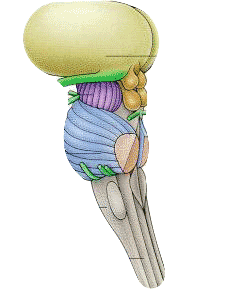

Back to Homepage
Back to Homepage
Name the parts!
Thalamus
On top of the brain stem. Sensory control center. Gets information from all senses (except smell) and trasmits it to sensory areas in the cerebral cortex. Also relays the brain's replies to the cerebellum and medulla.
Midbrain
Includes the reticular formation. "Mid" because it's on top of the hindbrain, but is below the forbrain.
Pons
Coordinates movement and purpose of movement. Without it, one could do actions, but not purposefully. Above the medulla.
Medulla
Controls basic functions, such as heartbeat and breathing. The swell at the top of spinal cord.
Brainstem
Also called the reptilian brain: the oldest core of the brain. Controls automatic functions. Includes the pons, medulla, and midbrain.
Spinal Cord
Part of the central nervous center. House interneurons that help connect the brain to the peripheral system and to sensory input.
Cerebellum
The mini-brain at the back of the brainstem. Processes sensory input, judges time, coordinates voluntary movement and balance, and aids in nonverbal learning and memory.
Reticular Formation
A weblike nerve network that passes throught the thalamus and the brainstem. Controls arousal and filters incoming stimuli. Stimulating this area can cause a wakeful feeling, while damaging it can cause lapsing into a coma.